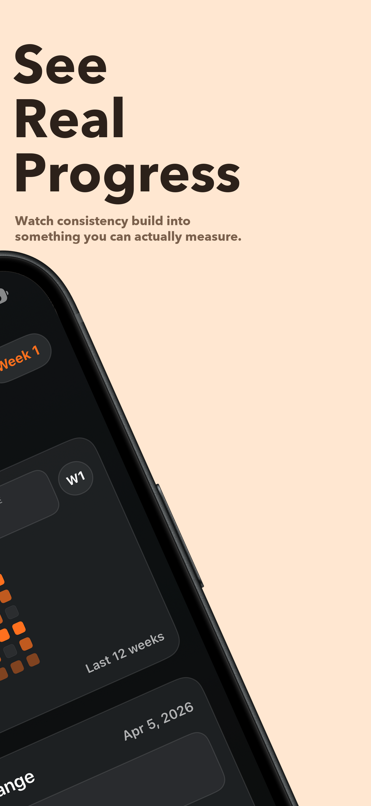
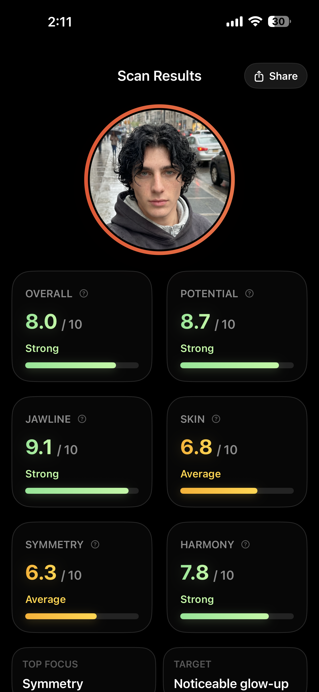

AI face scan / daily protocol / progress tracking
See the read. Follow the plan. Prove the change.
MogUp AI is built for people who want a tighter feedback loop. Start with a face scan, get a focused protocol, and keep your progress visible with streaks, history, and rescans.
Guided photo analysis
Targeted improvement focus
12-week progress cadence
Live score breakdown
Focused weekly protocol
Daily streak review
Weekly re-scan loop


Overview
One app. Three jobs. No guesswork in between.
The product is designed like a closed loop instead of a one-time novelty. Every screen either sharpens the read, narrows the work, or makes the effort easier to review.
01 / Read
Get a baseline that feels specific.
MogUp AI turns one front-facing photo into a score breakdown with clear focus areas, strengths, and potential so you know where to direct attention.
02 / Execute
Lock onto the current protocol.
Instead of chasing random tips, the app narrows the routine into a weekly phase with daily actions that support the current target.
03 / Review
Track consistency before judging results.
Progress history, streaks, and rescans create a better review moment, so change is measured against behavior instead of mood.
System
A tighter grooming feedback loop.
The product experience is built around one idea: give users a sharper read, one priority at a time, then make consistency visible enough to keep going.
- Start with the scan. See overall score, upside, and the exact traits that need the most attention.
- Follow the active phase. Use the protocol as the source of truth for what to do today and why it matters.
- Review the week honestly. Use streaks and rescans to separate real consistency from wishful thinking.
Scan output
Built to make the weak spots obvious.
The results view turns facial analysis into a readable dashboard with category scores, a strongest-area summary, and a clear target.
- Score cards surface strengths and average zones immediately.
- Top-focus guidance keeps the next improvement area obvious.
- Share-ready output makes the scan feel like a real artifact.
Progress loop
Consistency gets its own dashboard.
The progress screen rewards execution, not just aspiration. Users can see their current score, streak length, active-day count, and where they are inside the current 12-week journey.
- Streak visualization keeps momentum tangible.
- Phase tracking frames the routine as a longer arc.
- Retake prompts create the habit of rechecking instead of drifting.
Public docs
Everything users need before or after install.
The product pitch stays sharp, but the support, privacy, and download links remain one tap away for onboarding, review, and compliance.
01
Download
Open the public app link used by the product.
02
Support
Reach the developer for subscription or product help.
03
Privacy
Review face-data handling, storage, and AI processing details.
04
AI Photo Consent
Read the consent details shown before starting an AI face scan.
05
Terms
See product scope, disclaimers, and subscription rules.